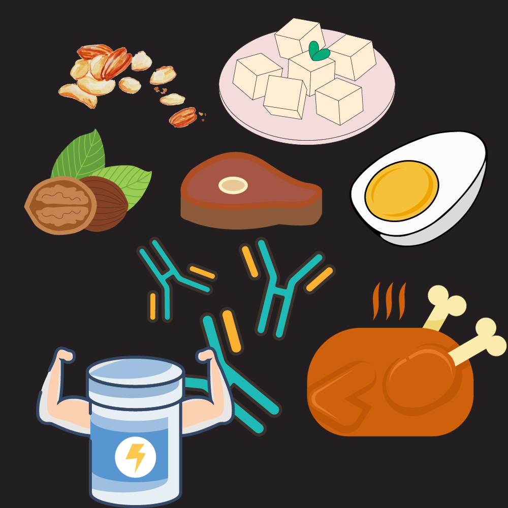
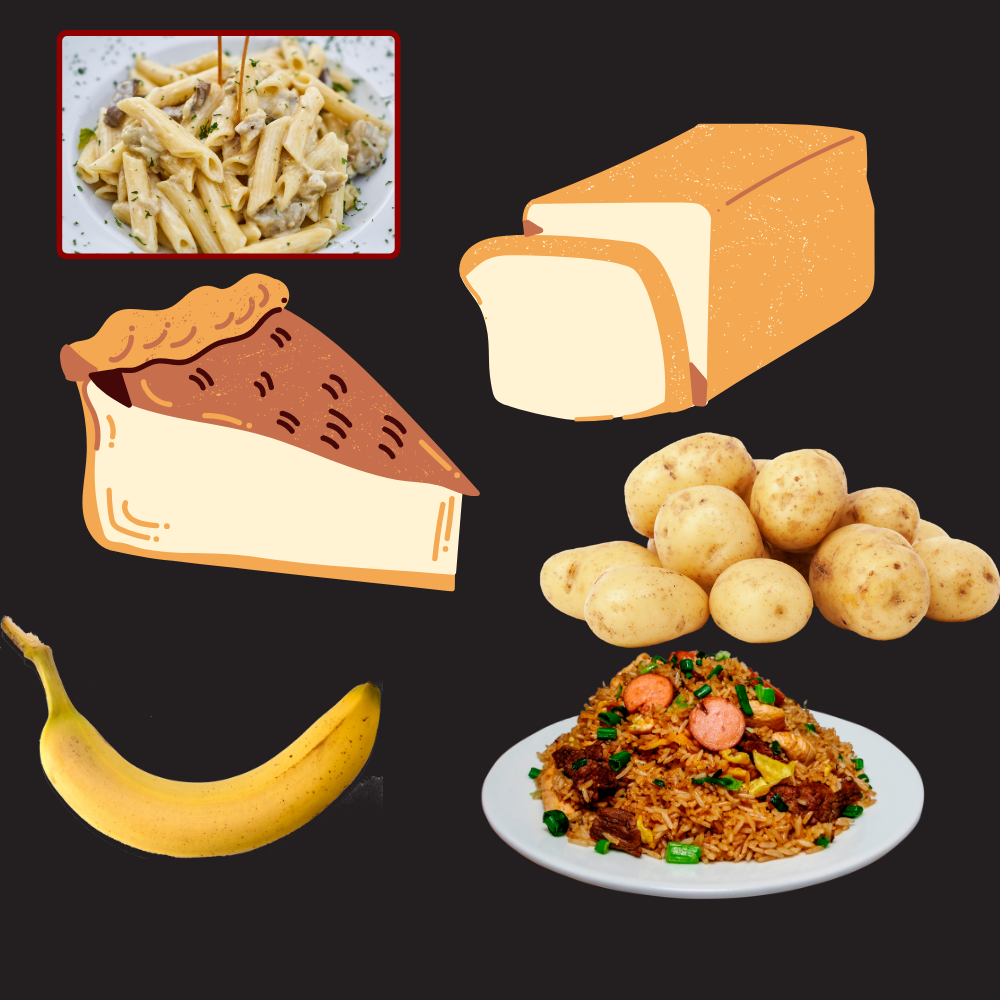
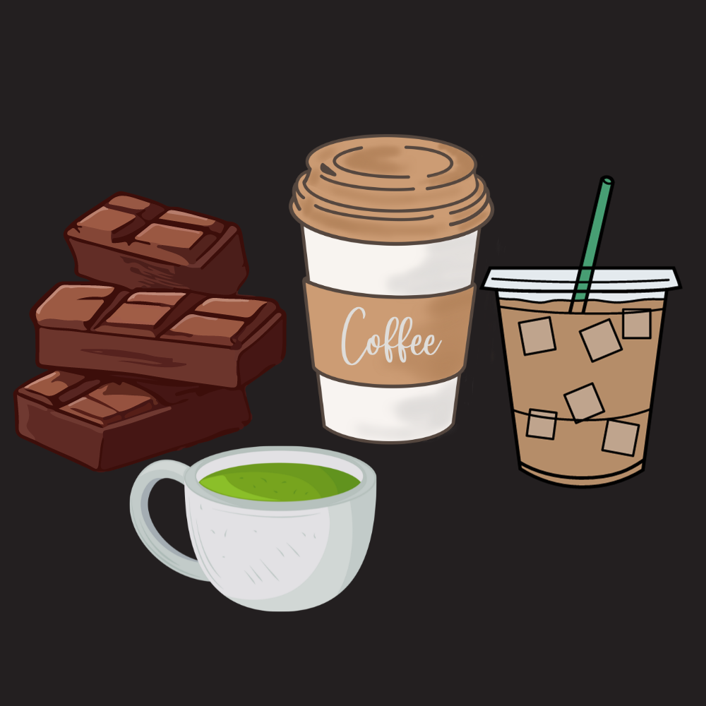
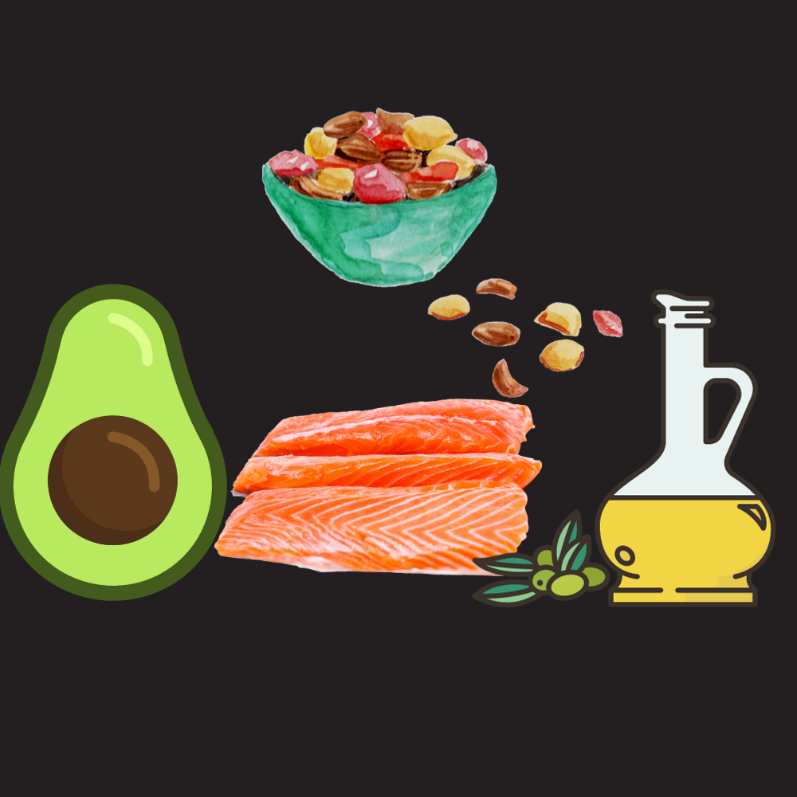
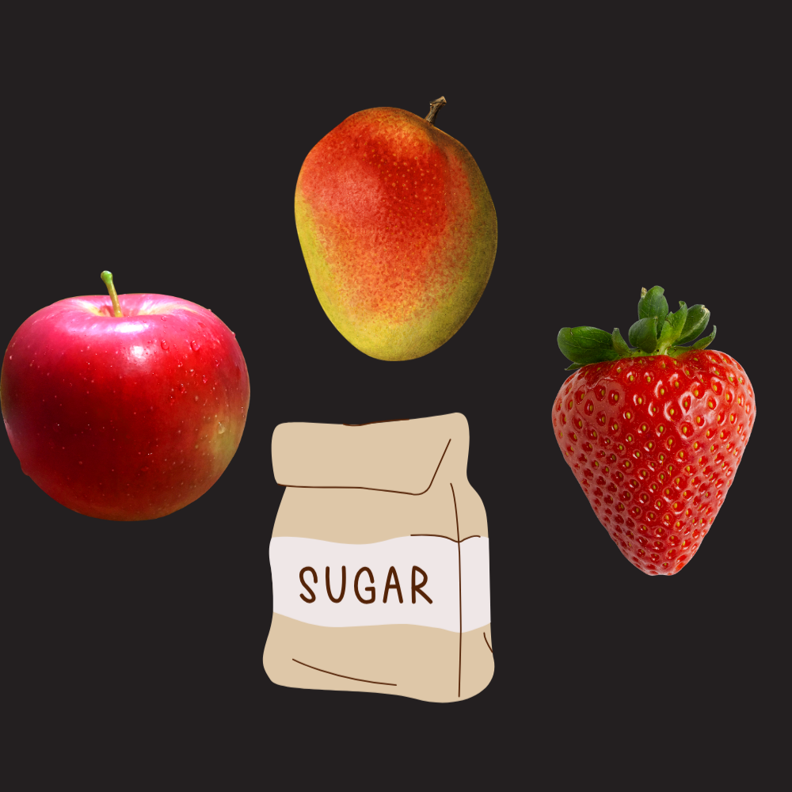
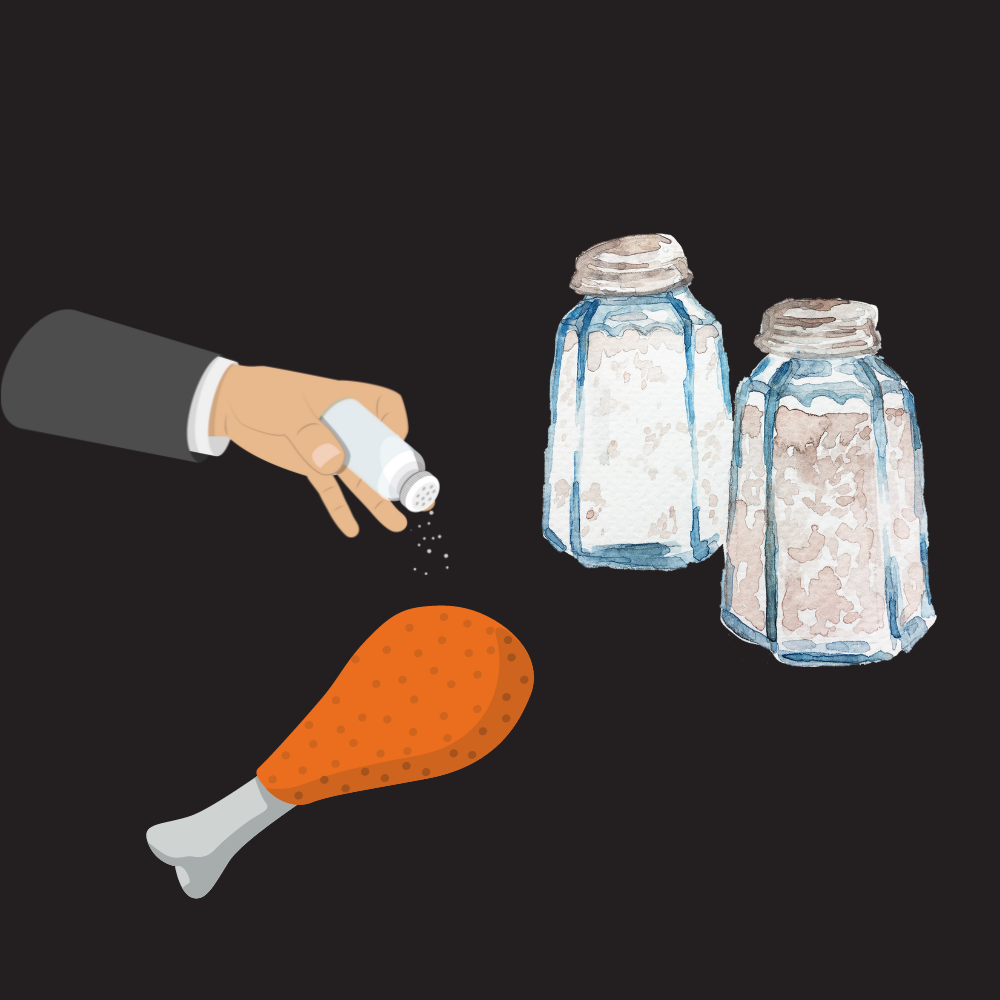
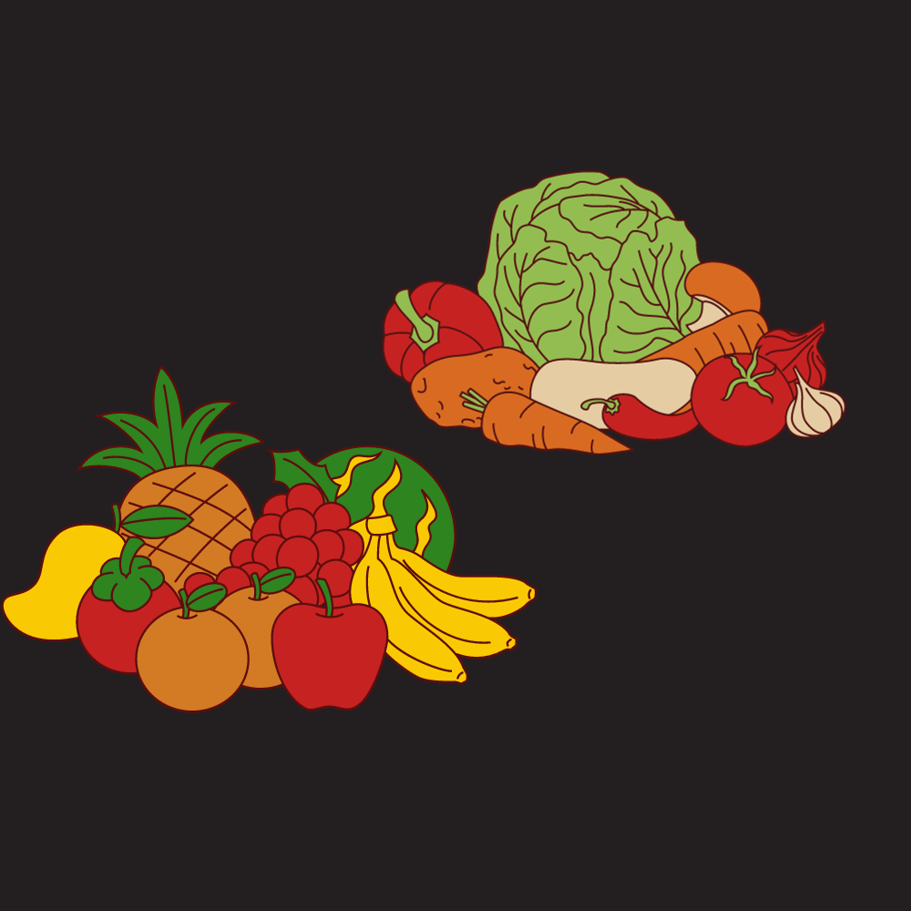

Make sure to include a variety of foods in your diet and limit process foods from fast food resturants. Limit calories on added sugar, sodium, and saturated fats and focus on nutritent density and amount of food.
Stay hydrated by drinking plenty of water throughout the day.
Here's a sample diet plan tailored for your fitness goals (NOTE: advisable to talk to a professional nutritionist about these diets before starting!):
Mediterranean Diet: Is a diet built around vegetables, fruit, nuts, and whole grains. This diet is known as a healthy eating pattern. It lowers the amount of red meat consumed to once in a while as well with dairy being a daily to weekly consumption. A daily serving of fruits and whole grains with seafood being the healthy alternative to meats consumed a few times per week. All to make sure there's a balance of protein and natural foods in your diet to keep up with your daily physical activity.
Keto diet: Diet that revolves around meat, fish, eggs, nuts, fats, and limited amounts of fruits and vegetables. This diet is a strategy used to lose weight. It makes it so the body could use up fat for energy instead of carbs when exercising. It has a satiating effect decreasing food cravings due to the high-fat content of the diet.
Vegetarian and Vegan Diets: Diet that revolves exclusively around fruits and vegetables. It removes meat and dairy products and has a big emphasis on low calories but nutrient dense foods. With this diet there are ways to still get your protein intake such as beans, tofu, nuts and quinoa. A very beneficial diet for the body lowering chances of diseases by a lot.
Paleo Diet: This diet is a healthy way of eating and it focuses well with high protein rich foods with little to no processed foods. This diet is centered around minimally processed foods, such as lean meats, fish, vegetables and fruits. This diet comes packed with many benefits like higher energy, weight loss, improved blood pressure and cholesterol. A diet like this could be very restrictive as you cut out dairy and grains out of the diet so be aware. It’s very effective when put into plan and when bodybuilding for high muscle hypertrophy.
Protein is essential for muscle repair and growth. In your diet try to include lean sources of protein such as chicken, fish, tofu, beans, and peanuts in your diet. These foods provide amino acids that aid in building and repairing tissues. Additionally, protein helps to support a healthy immune system and can contribute to weight management by promoting a feeling of fullness. It is recommended to get 0.8g-1.2g per pound of protein in order to build muscles.
You need carbohydrates for energy when working out. Choose complex carbs such as those found in fruits, vegetables, and whole grains. These meals provide a steady fuel source for physical activity by releasing energy gradually. In addition to boosting brain function, carbohydrates can improve workout performance. A diverse range of carbs guarantees a well-rounded supply of nutrients for general health and fitness in your diet. Carbohydrates are converted to energy more effectively than protein or fat so whenever you are on a low-carb diet you may feel weak and fatigued. That is why although it is good for your body to use fat reserve for energy it is better to have carbohydrates in your diet if you are working out intensely.
Caffeine is a reliable source to enhance your alertness and performance. Consume it in moderation through sources like coffee, tea, or pre-workout supplements. Caffeine acts as a stimulant that can improve mental focus and reduce the perception of effort during exercise, that's why body lifters usually lift more than usual when taking pre-workout. Caffeine can improve exercise performance by 11-12%! It may also boost metabolism and aid in fat burning while cardio training. However, it is important to be mindful of your own tolerance levels and avoid excessive consumption to prevent negative side effects such as jitteriness and disrupted sleep. It is best not to drink coffee or any caffeine within 6 to 8 hours of your bedtime.
Healthy fats, such as those found in avocados, salmon, nuts, and olive oil, are important for overall health and can support energy needs. These fats provide essential fatty acids that the body cannot produce on its own such as omega 3. By reducing cholesterol, increasing feelings of fullness, and maintaining cardiovascular health, when taken in moderation, healthy fats can support a sustainable and well-balanced diet. Omega-3 fats are key to anti-inflammatory properties when exercising and could help recovery times and reduce soreness.
Limit added sugars to your diet. When consuming sugar try to add natural sources of sweetness like fruits and be mindful of processed foods with high sugar content. Excessive sugar intake is linked to various health issues, including weight gain, inflammation, and increased risk of chronic diseases. Opting for whole foods and reducing the consumption of sugary beverages and snacks can help maintain stable blood sugar levels and support overall well-being. Paying attention to food labels and choosing alternatives with lower added sugar content contributes to a healthier lifestyle.
Manage sodium intake by avoiding excessively salty foods. Opt for fresh ingredients and use herbs and spices for flavor. High sodium intake is associated with increased hypertension, and cardiovascular risks. Choosing whole, minimally processed foods and reducing the use of added salt in cooking can contribute to a heart-healthy diet. Be mindful of hidden sources of sodium in packaged foods, and consider flavoring meals with herbs, garlic, and other seasonings to enhance taste without compromising health. Prioritizing a balanced and low-sodium diet supports overall cardiovascular wellness. There is a diet plan I have learned about called a dash diet. It includes fat-free or low-fat dairy products like fish, beans, and nuts. This limits fatty meats, heavily fat dairy, and sugar sweetened beverages. It is recommended for those who have high blood pressure.
Fruits and vegetables are rich in vitamins, minerals, and antioxidants. Aim to include a variety of colors in your daily intake for optimal health. These nutrient-dense foods provide essential vitamins and minerals that support various important bodily functions. Antioxidants found in fruits and vegetables help combat oxidative stress, reduce inflammation, and support a strong immune system. That is why it is important to consume a diverse range of fruits and vegetables to reach a broad range of nutrients to support your well-being. Including these colorful foods in your diet contributes to a balanced and nutrient-rich approach to nutrition.
Subscribe for Updates
Subscribe To Our Newsletter